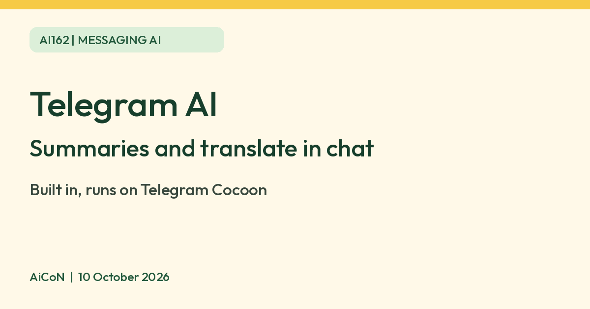

Telegram AI features: summaries and translate, and what Telegram says about privacy
Telegram has built-in AI summaries, translation and a text editor. Telegram says they run on its own Cocoon platform and send no data to third parties. AI bots are different.

What it is
Telegram has built-in AI features inside the chat app. Telegram's FAQ lists translation, custom tones, AI summaries of long channel posts and Instant View articles, and AI-powered sticker search. Long channel posts can be summarized; Instant View pages get an automatic summary at the top. A text editor sits above the Send arrow, can fix grammar, rewrite a message in another style or translate it, and appears once you type more than 3 lines.
Is it free
Telegram says the messenger is free and that private messaging "will stay free". Telegram Premium is an optional paid plan, and its FAQ says everything that existed before Premium stays free. The pages we read do not mark any of the AI features above as Premium-only, and Telegram's Evolution page says anyone can use the AI text tools. Telegram does not publish a separate price for the AI features. This is not a verified unlimited-free promise or a quota check. Check the app if one of them asks you to subscribe. The draft-message AI editor's translation is different from real-time whole-chat/channel translation, which the Premium FAQ lists as paid.
What happens to your text
Telegram says its own AI features run on Cocoon, an open-source decentralized AI platform it built, and that they never send data to third parties. AI inside a third-party bot or mini app is different. Telegram says that is a separate service with its own privacy policy.
Is it available in India
We did not verify an India-specific app-store listing or rollout for these AI features. The official update pages do not establish availability for every Indian account or device. We did not test them.
How to try it
- Update Telegram to the latest version.
- Open a long channel post and look for its summary option, or open a supported Instant View article and look for the automatic summary at the top.
- Type more than 3 lines in a chat and tap the Ai icon above Send to translate or fix the text.
Limits to know
- AI summaries and translations can miss details or get meaning wrong. Read the full post for anything important.
- Telegram describes the models only as open-source models running on Cocoon, so we cannot name them.
- Bots that offer AI are third-party services. Check each bot before you share private text.
- The Cocoon privacy claims above are Telegram's statements, not an independent security audit. They do not mean processing stays on your phone or that ordinary cloud chats become Secret Chats.
- No daily summary/editor quota or India-specific rollout was established from these pages.
- Review rewritten text before sending: AI may change tone or meaning.
- We did not test it ourselves.
Frequently asked questions
Do Telegram's AI features send my text to other companies?
Telegram says no. It says its AI features run on Cocoon and never send data to third parties.
Sources: Telegram FAQ, AI summaries post, AI editor post, Premium FAQ, Evolution of Telegram. Checked 10 October 2026.